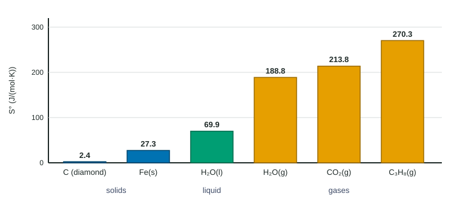

Topic 9.1 let you predict the sign of an entropy change. This page puts numbers on it. Just as a table of enthalpies of formation gives ΔH° for a reaction (topic 6.8), a table of standard molar entropies gives ΔS°.
Where entropy starts: zero at 0 K
Cool a perfect crystal toward 0 K (absolute zero). Its particles settle into the lowest-energy arrangement, and at 0 K there is exactly one way to arrange them and their energy: a single microstate. A single microstate means zero entropy. This is the third law of thermodynamics: a perfect crystal at 0 K has S = 0.
Because there is a true zero, entropy can be measured as an absolute value. Warm the crystal and its particles start to vibrate; the entropy climbs. It jumps at the melting point and jumps again, by more, at the boiling point, because each phase gives the particles far more freedom. Within each phase it keeps rising with temperature as the energy spreads over a wider range of speeds.
Standard molar entropy, S°
The standard molar entropy, S°, is the entropy of one mole of a substance in its standard state (1 bar for a gas, 1 M for a solution), usually listed at 298 K. Its unit is J/(mol·K): joules, not kilojoules.

Figure 1 shows the patterns to know:
- Every S° of a pure substance is positive, including elements such as O2(g) (205.2 J/(mol·K)) and Fe(s). This is different from ΔH°f, which is zero for an element in its standard state by definition.
- Gases ≫ liquids > solids. Water vapor (188.8) has nearly three times the entropy of liquid water (69.9).
- Rigid, simple solids are lowest. Diamond (2.4) has the strongest, stiffest network, so its atoms barely vibrate.
- More atoms per molecule, more entropy for similar substances: propane, C3H8(g) (270.3), beats CO2(g) (213.8), because a bigger molecule has more ways to rotate and vibrate.
Calculating ΔS° for a reaction
Entropy is a state function, so the change depends only on where you start and finish:
ΔS°rxn = Σ nS°(products) − Σ nS°(reactants)
where n is each substance's coefficient in the balanced equation. This is the same "products minus reactants" pattern as ΔH°rxn from ΔH°f, with one difference: elements do not drop out, because their S° is not zero.
Worked example. Calculate ΔS° for N2(g) + 3 H2(g) → 2 NH3(g). S° in J/(mol·K): N2(g) 191.6, H2(g) 130.7, NH3(g) 192.8.
Products: 2 mol × 192.8 J/(mol·K) = 385.6 J/K for the reaction as written.
Reactants: 1 mol × 191.6 J/(mol·K) + 3 mol × 130.7 J/(mol·K) = 191.6 + 392.1 = 583.7 J/K.
ΔS° = 385.6 − 583.7 = −198.1 J/(mol·K) (per mole of reaction as written).
Check the sign: 4 mol of gas become 2 mol of gas, so ΔS° should be negative. It is. Each S° is known to a tenth, so the answer keeps one decimal place: −198.1 J/(mol·K).
The "per mole" in the unit means per mole of reaction as the equation is written. If you double the equation, ΔS° doubles; if you reverse it, ΔS° changes sign. For 4 NH3(g) → 2 N2(g) + 6 H2(g), ΔS° = +396.2 J/(mol·K).
Common slips
| Slip | How to catch it |
|---|---|
| Leaving out coefficients | Write n × S° for every term before adding. |
| Reactants minus products | Compare the sign with the change in moles of gas. |
| Using S° for the wrong phase (H2O(g) for H2O(l)) | Read the state symbols in the equation, then find that exact row. |
| Treating S° of an element as zero | Only ΔH°f of an element is zero; S° never is. |
| Mixing J and kJ later on | S° is in J/(mol·K); ΔH° is in kJ/mol. Convert one before combining them (topic 9.3). |
When the sign is not obvious
If a reaction has the same number of moles of gas on each side and no phase change, such as H2(g) + Cl2(g) → 2 HCl(g), ΔS° is small and you need the table to know its sign. When the moles of gas change, the gas term dominates and you can predict the sign before calculating, which is the best check you have.